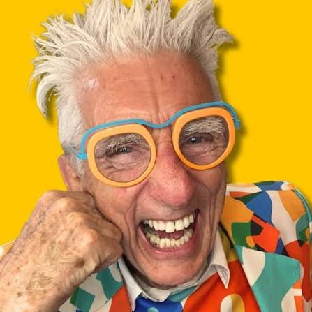

Do the steps in order. One at a time. Each step opens when you get to it, so you always know what is next. Start with Step 1 today.
Watch the video first. It shows you where everything is and what to do each day. Want it live? Join a Welcome Meetup. We run one every day.
You need a call sheet before you can start calling. Read the instructions first, then book a class. There are 3 ways to get a call sheet — pick any of them.
Use all 3. The more call sheets you have, the more chances you get.
Type what you need money for. The AI Researcher gives you the grants to call. Do this today. You do not have to wait for a class.
Read the instruction page, then post your question. A grant coach answers you. They can make your call sheet for you too. No question is too small.
We show you what to say on the phone and how to send your application. Read the instruction page first. Bring your call sheet to the class.
Bring your questions. Hear what worked for other members. Come as often as you like.
Ask Matthew about your grant search. Come with one question ready.

Do every step. Then you will know how to find grants on your own — and you will have a badge to prove it.
🔒 Keep goingYour progress is saved in this browser · Updated 21 September 2026